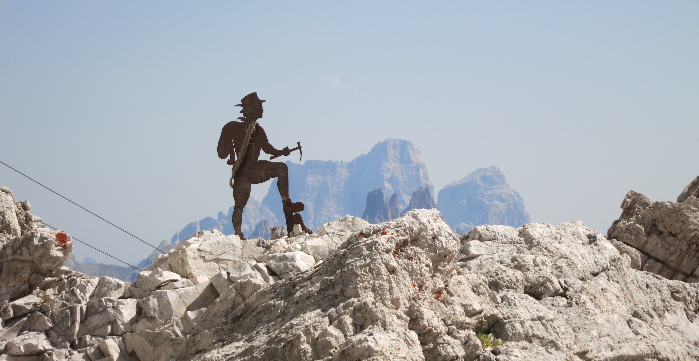

Actuellement étudiante en Norvège, ces carnets de voyage (un par destination!) numériques recensent mes derniers voyages
avec Pierre. Ce blog a plusieurs objectifs:
Pour moi, noter ces souvenirs quelques part et pouvoir les revoir facilement
Apprendre à créer un site internet

Partager un récit de nos vacances et quelques photos avec nos proches
Comme vous le remarquerez sûrement en vous baladant sur le site, nous passons souvent nos vacances à randonner et grimper :) En tout
cas nous ne sommes pas trop attirés par les lieux super-touristiques et aimons beaucoup les roadtrips, les campings. Il est rare que nous
partions sans nos chaussures de marche et nos baudriers !